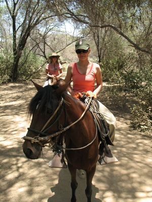

Ankunft
Wie Robert bereits letztes Mal erzählt hat, haben wir den Bus von Lima aus nach Chiclayo
genommen, um dort zu Pferd den Bosque de Pomac, den weltgrößten Trockenwald und die Pyramiden von
Túcume zu besichtigen.
Als wir angekommen sind, wurden wir glücklicherweise von der Besitzerin,
eine Schweizerin (Andrea) aus Zürich, die vor 11 Jahren nach Peru ausgewandert ist, von dem
Busterminal abgeholt. Die Fahrt endete nach ca einer Stunde in einem kleinen Örtchen namens
Pacora. Die Pferderanch liegt sehr abgeschieden mitten im peruanischen Niemandsland. Andrea
wohnt dort mit ihrem peruanischen Mann und ihrer Tochter in Lehmhütten. Alles war sehr einfach
gehalten, z. Bsp. wurde unter freiem Himmel mit kaltem Wasser geduscht. Das Anwesen ist sehr
groß. Verschiedenste Pflanzen, wie Kokosnusspalmen (Cocos nucifera) und etliche Tiere haben
dort ihren Platz. Neben den 14 Pferden haben wir dort auch Kühe, Hunde, Katzen und Hühner
vorgefunden. Den restlichen Tag haben wir auf der Ranch unser Zelt aufgeschlagen und
die Umgebung rund um Pacora erkundet.

Reittour
Gleich früh morgens ging es los. Ich hatte mich schon lange auf diese Tour gefreut! Mein
Pferd war eine peruanische Paso Pferd-Stute (wie die anderen auch) und hieß Soleil. Sie war
allerdings ein wenig ungeduldig und wollte meist als erste die Truppe anführen. Doch wir
haben uns schnell angefeundet und hatten eine Menge Spaß.
Zunächst sind wir ein paar Stunden durch den Bosque de Pomac geritten.

Die Lanschaft war
wirklich sehr beeindruckend. Eine von trockenen Flusstälern durchsetzte Wüstenlandschaft mit
lichten Bäumen. Die Bäume werfen in der Trockenzeit ihr Laub ab,damit sie weniger Wasser
benötigen. Nach Einsetzen der Regenzeit erscheint dann kräftiges,grünes (regengrünes) Laub.
Zwischendurch sind wir an unterschiedlichen Pyramiden nahe Túcume vorbeigekommen und
haben diese besichtigt.
 Dabei handelt es sich um die größte bekannte Ansammlung von Pyramiden
aus ungebrannten Lehmziegeln aus vorkolumbianischer Zeit. Andrea hat uns auch einiges zur
Geschichte jener Pyramiden erzählt... Gegen 19 Uhr sind wir etwas erschöpft
wieder auf der Ranch angekommen. Wir fanden, dass sich der Ausflug wirklich gelohnt hat!
Dabei handelt es sich um die größte bekannte Ansammlung von Pyramiden
aus ungebrannten Lehmziegeln aus vorkolumbianischer Zeit. Andrea hat uns auch einiges zur
Geschichte jener Pyramiden erzählt... Gegen 19 Uhr sind wir etwas erschöpft
wieder auf der Ranch angekommen. Wir fanden, dass sich der Ausflug wirklich gelohnt hat!
Besichtigung von Chiclayo
Am nächsten Tag haben wir uns früh auf den Weg nach Chiclayo gemacht. Wir wollten uns unbedingt noch den größten peruanischen Hexenmarkt und die Stadt selbst ansehen, bevor wir uns in der Nacht in den Bus nach Máncora gesetzt haben.

{kind=link}
Leave a comment